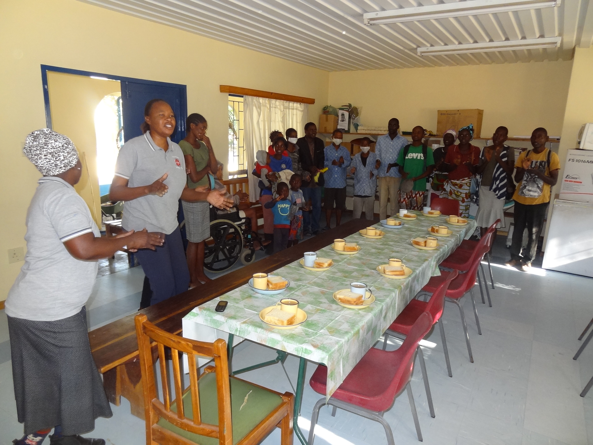
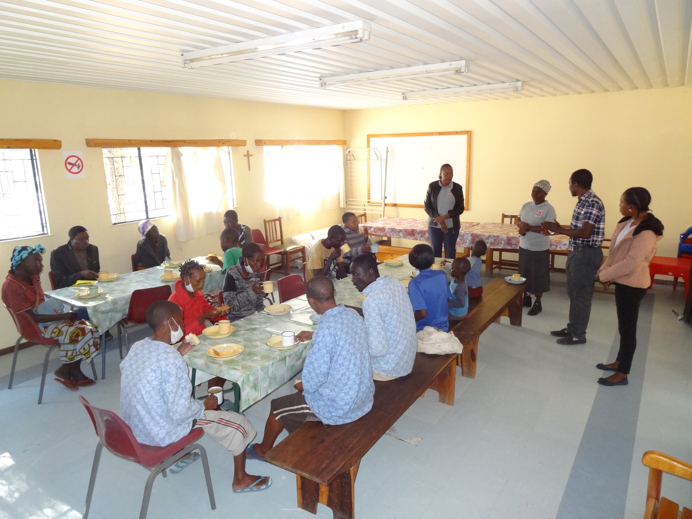

History of the TB-project and interesting facts about the city of Rundu
The JHW aid project in the Kavango-East region in the north of Namibia was launched in 2001. At the same time a spacious building (the so-called Ekwafo Centre) was established on the ground of the Rundu Intermediate Hospital. In the following years our organization took care of hundreds of TB- and HIV-patients. The assistance included amongst other things the monitoring of the taking of medication during the whole duration of treatment (generally 6-8 months) as well as giving useful advice to accelerate the healing process. In addition to this fresh meals were offered daily to ensure an adequate and sufficient nutrition for the patients.
The city of Rundu is the second largest town (after the capital Windhoek) in Namibia with more than 72,000 inhabitants. It is located directly at the Okavango river, which forms the border to Angola in the north. The city centre is characterized by a multitude of smaller shops and a big modern mall, the Rundu Intermediate Hospital as well as the Rundu Private Hospital, numerous bars and appealing lodges.
In the eastern and western part of Rundu various residential areas connect to the city centre. There is also a campus of the University of Namibia (UNAM) near the periphery of the city, as well as numerous other educational facilities. Outside the city boundaries there are extensive areas that are used for agriculture - one of the most important economic sectors of the region. Other dominant sectors are i.a. fishing, tourism, and the service industry.